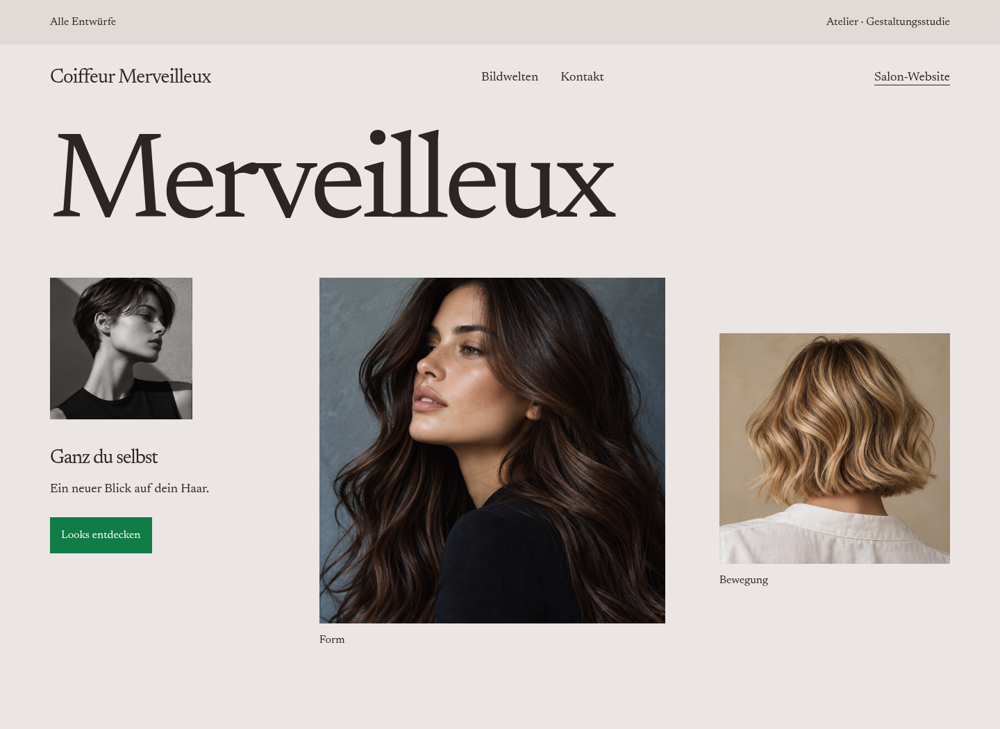
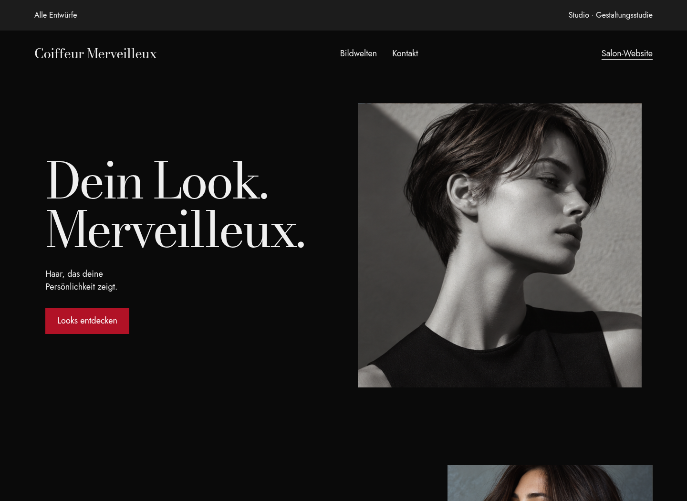
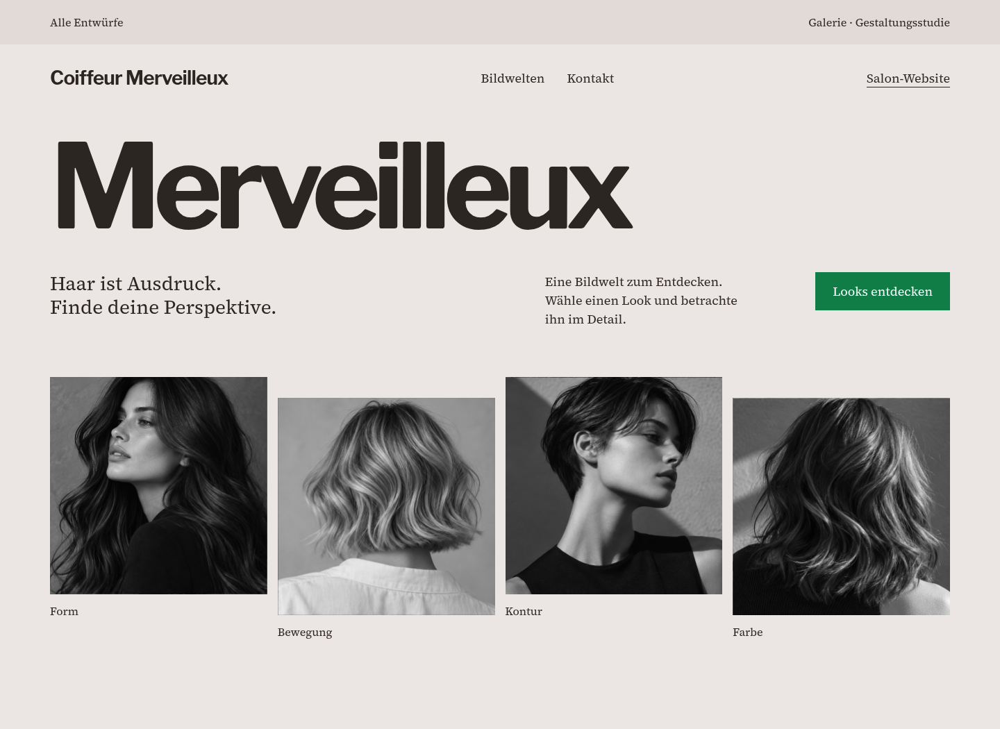

Atelier
Ruhig, persönlich und hochwertig. Leichte Serifenschrift und frei gesetzte Bildformate.
Atelier ansehenDrei eigenständige Richtungen für den neuen Webauftritt. Jede Seite lässt sich auf Desktop und Handy bedienen.

Ruhig, persönlich und hochwertig. Leichte Serifenschrift und frei gesetzte Bildformate.
Atelier ansehen
Modisch und ausdrucksstark. Dunkle Flächen, grosse Typografie und fotografischer Fokus.
Studio ansehen
Die Website-Dateien sowie die Ansichten als Bilder und PDFs stehen hier als ZIP bereit.